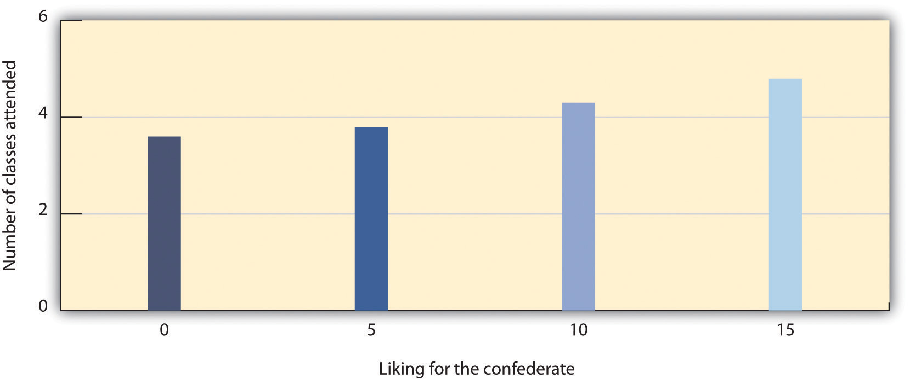

One important aspect of social cognition involves forming impressions of other people. Making these judgments quickly and accurately helps us guide our behavior to interact appropriately with the people we know. If we can figure out why our roommate is angry at us, we can react to resolve the problem; if we can determine how to motivate the people in our group to work harder on a project, then the project might be better.
Our initial judgments of others are based in large part on what we see. The physical features of other people, particularly their sex, race, age, and physical attractiveness, are very salient, and we often focus our attention on these dimensions (Schneider, 2003; Zebrowitz & Montepare, 2006).Schneider, D. J. (2004). The psychology of stereotyping. New York, NY: Guilford Press; Zebrowitz, L. A., & Montepare, J. (2006). The ecological approach to person perception: Evolutionary roots and contemporary offshoots. In M. Schaller, J. A. Simpson, & D. T. Kenrick (Eds.), Evolution and social psychology (pp. 81–113). Madison, CT: Psychosocial Press.
Although it may seem inappropriate or shallow to admit it, we are strongly influenced by the physical attractiveness of others, and many cases physical attractiveness is the most important determinant of our initial liking for other people (Walster, Aronson, Abrahams, & Rottmann, 1966).Walster, E., Aronson, V., Abrahams, D., & Rottmann, L. (1966). Importance of physical attractiveness in dating behavior. Journal of Personality and Social Psychology, 4(5), 508–516. Infants who are only a year old prefer to look at faces that adults consider to be attractive than at unattractive faces (Langlois, Ritter, Roggman, & Vaughn, 1991).Langlois, J. H., Ritter, J. M., Roggman, L. A., & Vaughn, L. S. (1991). Facial diversity and infant preferences for attractive faces. Developmental Psychology, 27(1), 79–84. Evolutionary psychologists have argued that our belief that “what is beautiful is also good” may be because we use attractiveness as a cue for health; people whom we find more attractive may also, evolutionarily, have been healthier (Zebrowitz, Fellous, Mignault, & Andreoletti, 2003).Zebrowitz, L. A., Fellous, J.-M., Mignault, A., & Andreoletti, C. (2003). Trait impressions as overgeneralized responses to adaptively significant facial qualities: Evidence from connectionist modeling. Personality and Social Psychology Review, 7(3), 194–215.
One indicator of health is youth. Leslie Zebrowitz and her colleagues (Zebrowitz, 1996; Zebrowitz, Luevano, Bronstad, & Aharon, 2009)Zebrowitz, L. A. (1996). Physical appearance as a basis of stereotyping. In C. N. Macrae, C. Stangor, & M. Hewstone (Eds.), Stereotypes and stereotyping (pp. 79–120). New York, NY: Guilford Press; Zebrowitz, L. A., Luevano, V. X., Bronstad, P. M., & Aharon, I. (2009). Neural activation to babyfaced men matches activation to babies. Social Neuroscience, 4(1), 1–10. have extensively studied the tendency for both men and women to prefer people whose faces have characteristics similar to those of babies. These features include large, round, and widely spaced eyes, a small nose and chin, prominent cheekbones, and a large forehead. People who have baby faces (both men and women) are seen as more attractive than people who are not baby-faced.
Figure 14.2

People with baby faces are perceived as attractive.
Source: Efron photo courtesy of Johan Ferreira, http://www.flickr.com/photos/23664669@N08/2874031622. Bilson photo courtesy of Stephen Lovekin / Getty Images, http://www.flickr.com/photos/34128229@N06/3182841715.
Another indicator of health is symmetry. People are more attracted to faces that are more symmetrical than they are to those that are less symmetrical, and this may be due in part to the perception that symmetrical faces are perceived as healthier (Rhodes et al., 2001).Rhodes, G., Zebrowitz, L. A., Clark, A., Kalick, S. M., Hightower, A., & McKay, R. (2001). Do facial averageness and symmetry signal health? Evolution and Human Behavior, 22(1), 31–46.
Although you might think that we would prefer faces that are unusual or unique, in fact the opposite is true. Langlois and Roggman (1990)Langlois, J. H., & Roggman, L. A. (1990). Attractive faces are only average. Psychological Science, 1(2), 115–121. showed college students the faces of men and women. The faces were composites made up of the average of 2, 4, 8, 16, or 32 faces. The researchers found that the more faces that were averaged into the stimulus, the more attractive it was judged. Again, our liking for average faces may be because they appear healthier.
Although preferences for youthful, symmetrical, and average faces have been observed cross-culturally, and thus appear to be common human preferences, different cultures may also have unique beliefs about what is attractive. In modern Western cultures, “thin is in,” and people prefer those who have little excess fat (Crandall, Merman, & Hebl, 2009).Crandall, C. S., Merman, A., & Hebl, M. (2009). Anti-fat prejudice. In T. D. Nelson (Ed.), Handbook of prejudice, stereotyping, and discrimination (pp. 469–487). New York, NY: Psychology Press. The need to be thin to be attractive is particularly strong for women in contemporary society, and the desire to maintain a low body weight can lead to low self-esteem, eating disorders, and other unhealthy behaviors. However, the norm of thinness has not always been in place; the preference for women with slender, masculine, and athletic looks has become stronger over the past 50 years. In contrast to the relatively universal preferences for youth, symmetry, and averageness, other cultures do not show such a strong propensity for thinness (Sugiyama, 2005).Sugiyama, L. S. (2005). Physical attractiveness in adaptationist perspective. In D. M. Buss (Ed.), The handbook of evolutionary psychology (pp. 292–343). Hoboken, NJ: John Wiley & Sons.
We frequently use people’s appearances to form our judgments about them and to determine our responses to them. The tendency to attribute personality characteristics to people on the basis of their external appearance or their social group memberships is known as stereotypingThe tendency to attribute personality characteristics to people on the basis of their external appearance or their social group memberships.. Our stereotypes about physically attractive people lead us to see them as more dominant, sexually warm, mentally healthy, intelligent, and socially skilled than we perceive physically unattractive people (Langlois et al., 2000).Langlois, J. H., Kalakanis, L., Rubenstein, A. J., Larson, A., Hallam, M., & Smoot, M. (2000). Maxims or myths of beauty? A meta-analytic and theoretical review. Psychological Bulletin, 126(3), 390–423. And our stereotypes lead us to treat people differently—the physically attractive are given better grades on essay exams, are more successful on job interviews, and receive lighter sentences in court judgments than their less attractive counterparts (Hosoda, Stone-Romero, & Coats, 2003; Zebrowitz & McDonald, 1991).Hosoda, M., Stone-Romero, E. F., & Coats, G. (2003). The effects of physical attractiveness on job-related outcomes: A meta-analysis of experimental studies. Personnel Psychology, 56(2), 431–462; Zebrowitz, L. A., & McDonald, S. M. (1991). The impact of litigants’ baby-facedness and attractiveness on adjudications in small claims courts. Law & Human Behavior, 15(6), 603–623.
In addition to stereotypes about physical attractiveness, we also regularly stereotype people on the basis of their sex, race, age, religion, and many other characteristics, and these stereotypes are frequently negative (Schneider, 2004).Schneider, D. J. (2004). The psychology of stereotyping. New York, NY: Guilford Press. Stereotyping is unfair to the people we judge because stereotypes are based on our preconceptions and negative emotions about the members of the group. Stereotyping is closely related to prejudiceThe tendency to dislike people because of their appearance or group memberships., the tendency to dislike people because of their appearance or group memberships, and discriminationNegative behaviors toward others based on prejudice., negative behaviors toward others based on prejudice. Stereotyping, prejudice, and discrimination work together. We may not vote for a gay person for public office because of our negative stereotypes about gays, and we may avoid people from other religions or those with mental illness because of our prejudices.
Some stereotypes may be accurate in part. Research has found, for instance, that attractive people are actually more sociable, more popular, and less lonely than less attractive individuals (Langlois et al., 2000).Langlois, J. H., Kalakanis, L., Rubenstein, A. J., Larson, A., Hallam, M., & Smoot, M. (2000). Maxims or myths of beauty? A meta-analytic and theoretical review. Psychological Bulletin, 126(3), 390–423. And, consistent with the stereotype that women are “emotional,” women are, on average, more empathic and attuned to the emotions of others than are men (Hall & Schmid Mast, 2008).Hall, J. A., & Schmid Mast, M. (2008). Are women always more interpersonally sensitive than men? Impact of goals and content domain. Personality and Social Psychology Bulletin, 34(1), 144–155. Group differences in personality traits may occur in part because people act toward others on the basis of their stereotypes, creating a self-fulfilling prophecy. A self-fulfilling prophecyA situation that occurs when our expectations about the personality characteristics of others lead us to behave toward those others in ways that make those beliefs come true. occurs when our expectations about the personality characteristics of others lead us to behave toward those others in ways that make those beliefs come true. If I have a stereotype that attractive people are friendly, then I may act in a friendly way toward people who are attractive. This friendly behavior may be reciprocated by the attractive person, and if many other people also engage in the same positive behaviors with the person, in the long run he or she may actually become friendlier.
But even if attractive people are on average friendlier than unattractive people, not all attractive people are friendlier than all unattractive people. And even if women are, on average, more emotional than men, not all men are less emotional than all women. Social psychologists believe that it is better to treat people as individuals rather than rely on our stereotypes and prejudices, because stereotyping and prejudice are always unfair and often inaccurate (Fiske, 1989; Stangor, 1995).Fiske, S. T. (1989). Examining the role of intent: Toward understanding its role in stereotyping and prejudice. In J. S. Uleman & J. A. Bargh (Eds.), Unintended thought (pp. 253–286). New York, NY: Guilford Press; Stangor, C. (1995). Content and application inaccuracy in social stereotyping. In Y. T. Lee, L. J. Jussim, & C. R. McCauley (Eds.), Stereotype accuracy: Toward appreciating group differences (pp. 275–292). Washington, DC: American Psychological Association. Furthermore, many of our stereotypes and prejudices occur out of our awareness, such that we do not even know that we are using them.
You might want to test your own stereotypes and prejudices by completing the Implicit Association Test, a measure of unconscious stereotyping.
We use our stereotypes and prejudices in part because they are easy; if we can quickly size up people on the basis of their physical appearance, that can save us a lot of time and effort. We may be evolutionarily disposed to stereotyping. Because our primitive ancestors needed to accurately separate members of their own kin group from those of others, categorizing people into “us” (the ingroup) and “them” (the outgroup) was useful and even necessary (Neuberg, Kenrick, & Schaller, 2010).Neuberg, S. L., Kenrick, D. T., & Schaller, M. (2010). Evolutionary social psychology. In S. T. Fiske, D. T. Gilbert, & G. Lindzey (Eds.), Handbook of social psychology (5th ed., Vol. 2, pp. 761–796). Hoboken, NJ: John Wiley & Sons. And the positive emotions that we experience as a result of our group memberships—known as social identityThe positive emotions that we experience as a result of our group memberships.—can be an important and positive part of our everyday experiences (Hogg, 2003).Hogg, M. A. (2003). Social identity. In M. R. Leary & J. P. Tangney (Eds.), Handbook of self and identity (pp. 462–479). New York, NY: Guilford Press. We may gain social identity as members of our university, our sports teams, our religious and racial groups, and many other groups.
Figure 14.3

Social identity is the positive emotions that we experience as a member of an important social group.
Source: Photo courtesy of Caitlin Regan, http://www.flickr.com/photos/caitlinator/4006197725.
But the fact that we may use our stereotypes does not mean that we should use them. Stereotypes, prejudice, and discrimination, whether they are consciously or unconsciously applied, make it difficult for some people to effectively contribute to society and may create both mental and physical health problems for them (Swim & Stangor, 1998).Swim, J. T., & Stangor, C. (1998). Prejudice: The target’s perspective. Santa Barbara, CA: Academic Press. In some cases getting beyond our prejudices is required by law, as detailed in the U.S. Civil Rights Act of 1964, the Equal Opportunity Employment Act of 1972, and the Fair Housing Act of 1978.
There are individual differences in prejudice, such that some people are more likely to try to control and confront their stereotypes and prejudices whereas others apply them more freely (Czopp, Monteith, & Mark, 2006; Plant & Devine, 1998).Czopp, A. M., Monteith, M. J., & Mark, A. Y. (2006). Standing up for a change: Reducing bias through interpersonal confrontation. Journal of Personality and Social Psychology, 90(5), 784–803; Plant, E. A., & Devine, P. G. (1998). Internal and external motivation to respond without prejudice. Journal of Personality and Social Psychology, 75(3), 811–832. For instance, some people believe in group hierarchies—that some groups are naturally better than others—whereas other people are more egalitarian and hold fewer prejudices (Sidanius & Pratto, 1999; Stangor & Leary, 2006).Sidanius, J., & Pratto, F. (1999). Social dominance: An intergroup theory of social hierarchy and oppression. New York, NY: Cambridge University Press; Stangor, C., & Leary, S. (2006). Intergroup beliefs: Investigations from the social side. Advances in Experimental Social Psychology, 38, 243–283.
Social psychologists believe that we should work to get past our prejudices. The tendency to hold stereotypes and prejudices and to act on them can be reduced, for instance, through positive interactions and friendships with members of other groups, through practice in avoiding using them, and through education (Hewstone, 1996).Hewstone, M. (1996). Contact and categorization: Social psychological interventions to change intergroup relations. In C. N. Macrae, C. Stangor, & M. Hewstone (Eds.), Stereotypes and stereotyping (pp. 323–368). New York, NY: Guilford Press.
Research has demonstrated that people can draw very accurate conclusions about others on the basis of very limited data. Ambady and Rosenthal (1993)Ambady, N., & Rosenthal, R. (1993). Half a minute: Predicting teacher evaluations from thin slices of nonverbal behavior and physical attractiveness. Journal of Personality & Social Psychology, 64(3), 431–441. made videotapes of six female and seven male graduate students while they were teaching an undergraduate course. The courses covered diverse areas of the college curriculum, including humanities, social sciences, and natural sciences. For each teacher, three 10-second video clips were taken: 10 seconds from the first 10 minutes of the class, 10 seconds from the middle of the class, and 10 seconds from the last 10 minutes of the class.
The researchers then asked nine female undergraduates to rate the clips of the teachers on 15 dimensions including optimistic, confident, active, enthusiastic, dominant, likable, warm, competent, and supportive. Ambady and her colleagues then compared the ratings of the participants who had seen the teacher for only 30 seconds with the ratings of the same instructors that had been made by students who had spent a whole semester with the teacher, and who had rated her at the end of the semester on scales such as “Rate the quality of the section overall” and “Rate section leader’s performance overall.” As you can see in Table 14.1 "Accurate Perceptions in 30 Seconds", the ratings of the participants and the ratings of the students were highly positively correlated.
Table 14.1 Accurate Perceptions in 30 Seconds
| Variable | Pearson Correlation Coefficient (r) |
|---|---|
| Accepting | 0.50 |
| Active | 0.77 |
| Attentive | 0.48 |
| Competent | 0.56 |
| Confident | 0.82 |
| Dominant | 0.79 |
| Empathic | 0.45 |
| Enthusiastic | 0.76 |
| Honest | 0.32 |
| Likable | 0.73 |
| (Not) anxious | 0.26 |
| Optimistic | 0.84 |
| Professional | 0.53 |
| Supportive | 0.55 |
| Warm | 0.67 |
| Overall, across all traits | 0.76 |
| This table shows the Pearson correlation coefficients between the impressions that a group of students made after they had seen a video of instructors teaching for only 30 seconds and the teaching ratings of the same instructors made by students who had spent a whole semester in the class. You can see that the correlations are all positive, and that many of them are quite large. The conclusion is that people are sometimes able to draw accurate impressions about other people very quickly. | |
Source: Ambady, N., & Rosenthal, R. (1993). Half a minute: Predicting teacher evaluations from thin slices of nonverbal behavior and physical attractiveness. Journal of Personality & Social Psychology, 64(3), 431–441.
If the finding that judgments made about people in 30 seconds correlate highly with judgments made about the same people after a whole semester surprises you, then perhaps you may be even more surprised to hear that we do not even need that much time. Indeed, Willis and Todorov (2006)Willis, J., & Todorov, A. (2006). First impressions: Making up your mind after a 100-ms exposure to a face. Psychological Science, 17(7), 592–598. found that even a tenth of a second was enough to make judgments that correlated highly with those same judgments made by other people who were given several minutes to make the judgments. Other research has found that we can make accurate judgments, for instance, about our perceptions of salespersons (Ambady, Krabbenhoft, & Hogan, 2006)Ambady, N., Krabbenhoft, M. A., & Hogan, D. (2006). The 30-sec sale: Using thin-slice judgments to evaluate sales effectiveness. Journal of Consumer Psychology, 16(1), 4–13. and about the sexual orientation of other people (Ambady, Hallahan, & Conner, 1999),Ambady, N., Hallahan, M., & Conner, B. (1999). Accuracy of judgments of sexual orientation from thin slices of behavior. Journal of Personality and Social Psychology, 77(3), 538–547. in just a few seconds. Todorov, Mandisodza, Goren, and Hall (2005)Todorov, A., Mandisodza, A. N., Goren, A., & Hall, C. C. (2005). Inferences of competence from faces predict election outcomes. Science, 308(5728), 1623–1626. found that people voted for political candidates in large part on the basis of whether or not their faces, seen only for one second, looked like faces of competent people. Taken together, this research shows that we are well able to form initial impressions of others quickly and often quite accurately.
One of the most important tasks faced by humans is to develop successful relationships with others. These relationships include acquaintanceships and friendships but also the more important close relationshipsLong-term intimate and romantic relationships—for instance, a marriage., which are the long-term intimate and romantic relationships that we develop with another person—for instance, in a marriage (Hendrick & Hendrick, 2000).Hendrick, C., & Hendrick, S. S. (Eds.). (2000). Close relationships: A sourcebook. Thousand Oaks, CA: Sage. Because most of us will want to enter into a close relationship at some point, and because close relationships are evolutionarily important as they form the basis for effective child rearing, it is useful to know what psychologists have learned about the principles of liking and loving within them.
A major interest of social psychologists is the study of interpersonal attraction, or what makes people like, and even love, each other. One important factor is a perceived similarity in values and beliefs between the partners (Davis & Rusbult, 2001).Davis, J. L., & Rusbult, C. E. (2001). Attitude alignment in close relationships. Journal of Personality & Social Psychology, 81(1), 65–84. Similarity is important for relationships both because it is more convenient (it’s easier if both partners like to ski or go to the movies than if only one does), but also because similarity supports our values—I can feel better about myself and my choice of activities if I see that you also enjoy doing the same things that I do.
Liking is also enhanced by self-disclosure, the tendency to communicate frequently, without fear of reprisal, and in an accepting and empathetic manner. Friends are friends because we can talk to them openly about our needs and goals, and because they listen to and respond to our needs (Reis & Aron, 2008).Reis, H. T., & Aron, A. (2008). Love: What is it, why does it matter, and how does it operate? Perspectives on Psychological Science, 3(1), 80–86. But self-disclosure must be balanced. If I open up to you about the concerns that are important to me, I expect you to do the same in return. If the self-disclosure is not reciprocal, the relationship may not last.
Another important determinant of liking is proximity, or the extent to which people are physically near us. Research has found that we are more likely to develop friendships with people who are nearby, for instance, those who live in the same dorm that we do, and even with people who just happen to sit nearer to us in our classes (Back, Schmukle, & Egloff, 2008).Back, M. D., Schmukle, S. C., & Egloff, B. (2008). Becoming friends by chance. Psychological Science, 19(5), 439–440.
Proximity has its effect on liking through the principle of mere exposureThe tendency to prefer stimuli (including but not limited to people) that we have seen more frequently., which is the tendency to prefer stimuli (including but not limited to people) that we have seen more frequently. Moreland and Beach (1992)Moreland, R. L., & Beach, S. R. (1992). Exposure effects in the classroom: The development of affinity among students. Journal of Experimental Social Psychology, 28(3), 255–276. studied mere exposure by having female confederates attend a large lecture class of over 100 students 0, 5, 10, or 15 times during a semester. At the end of the term, the other students in the class were shown pictures of the confederates and asked to indicate both if they recognized them and also how much they liked them. The number of times the confederates had attended class didn’t influence the other students’ ability to recognize them, but it did influence their liking for them. As predicted by the mere exposure hypothesis, students who had attended class more often were liked more (Figure 14.5 "Mere Exposure in the Classroom").
Figure 14.5 Mere Exposure in the Classroom
Richard Moreland and Scott Beach (1992) had female confederates visit classrooms 0, 5, 10, or 15 times over the course of a semester. Then the students rated their liking of the confederates. As predicted by the principles of mere exposure, confederates who had attended class more often were also liked more.
Source: Adapted from Moreland, R. L., & Beach, S. R. (1992). Exposure effects in the classroom: The development of affinity among students. Journal of Experimental Social Psychology, 28(3), 255–276.
The effect of mere exposure is powerful and occurs in a wide variety of situations. Infants tend to smile at a photograph of someone they have seen before more than they smile at a photograph of someone they are seeing for the first time (Brooks-Gunn & Lewis, 1981),Brooks-Gunn, J., & Lewis, M. (1981). Infant social perception: Responses to pictures of parents and strangers. Developmental Psychology, 17(5), 647–649. and people prefer side-to-side reversed images of their own faces over their normal (nonreversed) face, whereas their friends prefer their normal face over the reversed one (Mita, Dermer, & Knight, 1977).Mita, T. H., Dermer, M., & Knight, J. (1977). Reversed facial images and the mere-exposure hypothesis. Journal of Personality & Social Psychology, 35(8), 597–601. This is expected on the basis of mere exposure, since people see their own faces primarily in mirrors and thus are exposed to the reversed face more often.
Mere exposure may well have an evolutionary basis. We have an initial fear of the unknown, but as things become more familiar they seem more similar and safe, and thus produce more positive affect and seem less threatening and dangerous (Freitas, Azizian, Travers, & Berry, 2005).Freitas, A. L., Azizian, A., Travers, S., & Berry, S. A. (2005). The evaluative connotation of processing fluency: Inherently positive or moderated by motivational context? Journal of Experimental Social Psychology, 41(6), 636–644. In fact, research has found that stimuli tend to produce more positive affect as they become more familiar (Harmon-Jones & Allen, 2001).Harmon-Jones, E., & Allen, J. J. B. (2001). The role of affect in the mere exposure effect: Evidence from psychophysiological and individual differences approaches. Personality & Social Psychology Bulletin, 27(7), 889–898. When the stimuli are people, there may well be an added effect. Familiar people become more likely to be seen as part of the ingroup rather than the outgroup, and this may lead us to like them more. Leslie Zebrowitz and her colleagues found that we like people of our own race in part because they are perceived as similar to us (Zebrowitz, Bornstad, & Lee, 2007).Zebrowitz, L. A., Bronstad, P. M., & Lee, H. K. (2007). The contribution of face familiarity to ingroup favoritism and stereotyping. Social Cognition, 25(2), 306–338.
In the most successful relationships the two people begin to see themselves as a single unit. Arthur Aron and his colleagues (Aron, Aron, & Smollan, 1992)Aron, A., Aron, E. N., & Smollan, D. (1992). Inclusion of other in the self scale and the structure of interpersonal closeness. Journal of Personality & Social Psychology, 63(4), 596–612. assessed the role of closeness in relationships using the Inclusion of Other in the Self Scale as shown in Figure 14.6 "The Inclusion of Other in the Self Scale". You might try completing the measure yourself for some different people that you know—for instance, your family members, friends, spouse, or girlfriend or boyfriend. The measure is simple to use and to interpret; if people see the circles representing the self and the other as more overlapping, this means that the relationship is close. But if they choose the circles that are less overlapping, then the relationship is less so.
Figure 14.6 The Inclusion of Other in the Self Scale

This scale is used to determine how close two partners feel to each other. The respondent simply circles which of the seven figures he or she feels best characterizes the relationship.
Source: Adapted from Aron, A., Aron, E. N., & Smollan, D. (1992). Inclusion of other in the self scale and the structure of interpersonal closeness. Journal of Personality & Social Psychology, 63(4), 596–612.
Although the closeness measure is very simple, it has been found to be predictive of people’s satisfaction with their close relationships, and of the tendency for couples to stay together (Aron, Aron, Tudor, & Nelson, 1991; Aron, Paris, & Aron, 1995).Aron, A., Aron, E. N., Tudor, M., & Nelson, G. (1991). Close relationships as including other in the self. Journal of Personality & Social Psychology, 60, 241–253; Aron, A., Paris, M., & Aron, E. N. (1995). Falling in love: Prospective studies of self-concept change. Journal of Personality & Social Psychology, 69(6), 1102–1112. When the partners in a relationship feel that they are close, and when they indicate that the relationship is based on caring, warmth, acceptance and social support, we can say that the relationship is intimate (Reis & Aron, 2008).Reis, H. T., & Aron, A. (2008). Love: What is it, why does it matter, and how does it operate? Perspectives on Psychological Science, 3(1), 80–86.
When a couple begins to take care of a household together, has children, and perhaps has to care for elderly parents, the requirements of the relationship become correspondingly bigger. As a result of this complexity, the partners in close relationships increasingly turn to each other for help in coordinating activities, remembering dates and appointments, and accomplishing tasks. Relationships are close in part because the couple becomes highly interdependent, relying on each other to meet important goals (Berscheid & Reis, 1998).Berscheid, E., & Reis, H. T. (1998). Attraction and close relationships. In D. T. Gilbert, S. T. Fiske, & G. Lindzey (Eds.), The handbook of social psychology (4th ed., Vols. 1–2, pp. 193–281). New York, NY: McGraw-Hill.
In relationships in which a positive rapport between the partners is developed and maintained over a period of time, the partners are naturally happy with the relationship and they become committed to it. Commitment refers to the feelings and actions that keep partners working together to maintain the relationship (Rusbult, Olsen, Davis, Hannon, 2001)Rusbult, C. E., Olsen, N., Davis, J. L., & Hannon, P. A. (2001). Commitment and relationship maintenance mechanisms. In J. Harvey & A. Wenzel (Eds.), Close romantic relationships: Maintenance and enhancement (pp. 87–113). Mahwah, NJ: Lawrence Erlbaum Associates. and is characterized by mutual expectations that the self and the partner will be responsive to each other’s needs (Clark & Mills, 2004).Clark, M. S., & Mills, J. (2004). Interpersonal attraction in exchange and communal relationships. In H. T. Reis & C. E. Rusbult (Eds.), Close relationships: Key readings (pp. 245–256). Philadelphia, PA: Taylor & Francis. Partners who are committed to the relationship see their mates as more attractive, are less able to imagine themselves with another partner, express less interest in other potential mates, and are less likely to break up (Simpson & Harris, 1994).Simpson, J. A., & Harris, B. A. (1994). Interpersonal attraction. In A. L. Weber & J. H. Harvey (Eds.), Perspectives on close relationships (pp. 45–66). Boston, MA: Allyn & Bacon.
People also find relationships more satisfactory, and stay in them longer, when they feel that they are being rewarded by them. When the needs of either or both of the partners are not being met, the relationship is in trouble. This is not to say that people only think about the benefits they are getting; they will also consider the needs of the other. But over the long term, both partners must benefit from the relationship.
Although sexual arousal and excitement are more important early on in relationships, intimacy is also determined by sexual and romantic attraction. Indeed, intimacy is also dependent on passion—the partners must display positive affect toward each other. Happy couples are in positive moods when they are around each other; they laugh with each other, express approval rather than criticism of each other’s behaviors, and enjoy physical contact. People are happier in their relationships when they view the other person in a positive or even an “idealized” sense, rather than a more realistic and perhaps more negative one (Murray, Holmes, & Griffin, 1996).Murray, S. L., Holmes, J. G., & Griffin, D. W. (1996). The benefits of positive illusions: Idealization and the construction of satisfaction in close relationships. Journal of Personality & Social Psychology, 70(1), 79–98.
Margaret Clark and Edward Lemay (2010)Clark, M. S., & Lemay, E. P., Jr. (2010). Close relationships. In S. T. Fiske, D. T. Gilbert, & G. Lindzey (Eds.), Handbook of social psychology (5th ed., Vol. 2, pp. 898–940). Hoboken, NJ: John Wiley & Sons. recently reviewed the literature on close relationships and argued that their most important characteristic is a sense of responsiveness. People are happy, healthy, and likely to stay in relationships in which they are sure that they can trust the other person to understand, validate, and care for them. It is this unconditional giving and receiving of love that promotes the welfare of both partners and provides the secure base that allows both partners to thrive.
When we observe people’s behavior we may attempt to determine if the behavior really reflects their underlying personality. If Frank hits Joe, we might wonder if Frank is naturally aggressive or if perhaps Joe had provoked him. If Leslie leaves a big tip for the waitress, we might wonder if she is a generous person or if the service was particularly excellent. The process of trying to determine the causes of people’s behavior, with the goal of learning about their personalities, is known as causal attributionThe process of trying to determine the causes of people’s behavior, with the goal of learning about their personalities. (Jones et al., 1987).Jones, E. E., Kanouse, D. E., Kelley, H. H., Nisbett, R. E., Valins, S., & Weiner, B. (Eds.). (1987). Attribution: Perceiving the causes of behavior. Hillsdale, NJ: Lawrence Erlbaum Associates.
Making causal attributions is a bit like conducting an experiment. We carefully observe the people we are interested in and note how they behave in different social situations. After we have made our observations, we draw our conclusions. Sometimes we may decide that the behavior was caused primarily by the person; this is called making a person attribution. At other times, we may determine that the behavior was caused primarily by the situation; this is called making a situation attribution. And at other times we may decide that the behavior was caused by both the person and the situation.
It is easier to make personal attributions when behavior is more unusual or unexpected. Imagine that you go to a party and you are introduced to Tess. Tess shakes your hand and says “Nice to meet you!” Can you readily conclude, on the basis of this behavior, that Tess is a friendly person? Probably not. Because the social situation demands that people act in a friendly way (shaking your hand and saying “nice to meet you”), it is difficult to know whether Tess acted friendly because of the situation or because she is really friendly. Imagine, however, that instead of shaking your hand, Tess sticks out her tongue at you and walks away. I think you would agree that it is easier in this case to infer that Tess is unfriendly because her behavior is so contrary to what one would expect (Jones, Davis, & Gergen, 1961).Jones, E. E., Davis, K. E., & Gergen, K. J. (1961). Role playing variations and their informational value for person perception. Journal of Abnormal & Social Psychology, 63(2), 302–310.
Although people are reasonably accurate in their attributions (we could say, perhaps, that they are “good enough”; Fiske, 2003),Fiske, S. T. (2003). Social beings. Hoboken, NJ: John Wiley & Sons. they are far from perfect. One error that we frequently make when making judgments about ourselves is to make self-serving attributions by judging the causes of our own behaviors in overly positive ways. If you did well on a test, you will probably attribute that success to person causes (“I’m smart,” “I studied really hard”), but if you do poorly on the test you are more likely to make situation attributions (“The test was hard,” “I had bad luck”). Although making causal attributions is expected to be logical and scientific, our emotions are not irrelevant.
Another way that our attributions are often inaccurate is that we are, by and large, too quick to attribute the behavior of other people to something personal about them rather than to something about their situation. We are more likely to say, “Leslie left a big tip, so she must be generous” than “Leslie left a big tip, but perhaps that was because the service was really excellent.” The common tendency to overestimate the role of person factors and overlook the impact of situations in judging others is known as the fundamental attribution error (or correspondence bias)The common tendency to overestimate the role of person factors and overlook the impact of social situations in judging others..
The fundamental attribution error occurs in part because other people are so salient in our social environments. When I look at you, I see you as my focus, and so I am likely to make personal attributions about you. If the situation is reversed such that people see situations from the perspectives of others, the fundamental attribution error is reduced (Storms, 1973).Storms, M. D. (1973). Videotape and the attribution process: Reversing actors’ and observers’ points of view. Journal of Personality and Social Psychology, 27(2), 165–175. And when we judge people, we often see them in only one situation. It’s easy for you to think that your math professor is “picky and detail-oriented” because that describes her behavior in class, but you don’t know how she acts with her friends and family, which might be completely different. And we also tend to make person attributions because they are easy. We are more likely to commit the fundamental attribution error—quickly jumping to the conclusion that behavior is caused by underlying personality—when we are tired, distracted, or busy doing other things (Trope & Alfieri, 1997).Trope, Y., & Alfieri, T. (1997). Effortfulness and flexibility of dispositional judgment processes. Journal of Personality and Social Psychology, 73(4), 662–674.
An important moral about perceiving others applies here: We should not be too quick to judge other people. It is easy to think that poor people are lazy, that people who say something harsh are rude or unfriendly, and that all terrorists are insane madmen. But these attributions may frequently overemphasize the role of the person, resulting in an inappropriate and inaccurate tendency to blame the victim (Lerner, 1980; Tennen & Affleck, 1990).Lerner, M. (1980). The belief in a just world: A fundamental delusion. New York, NY: Plenum; Tennen, H., & Affleck, G. (1990). Blaming others for threatening events. Psychological Bulletin, 108(2), 209–232. Sometimes people are lazy and rude, and some terrorists are probably insane, but these people may also be influenced by the situation in which they find themselves. Poor people may find it more difficult to get work and education because of the environment they grow up in, people may say rude things because they are feeling threatened or are in pain, and terrorists may have learned in their family and school that committing violence in the service of their beliefs is justified. When you find yourself making strong person attributions for the behaviors of others, I hope you will stop and think more carefully. Would you want other people to make person attributions for your behavior in the same situation, or would you prefer that they more fully consider the situation surrounding your behavior? Are you perhaps making the fundamental attribution error?
AttitudeOur relatively enduring evaluations of people and things. refer to our relatively enduring evaluations of people and things (Albarracín, Johnson, & Zanna, 2005).Albarracín, D., Johnson, B. T., & Zanna, M. P. (Eds.). (2005). The handbook of attitudes. Mahwah, NJ: Lawrence Erlbaum Associates. We each hold many thousands of attitudes, including those about family and friends, political parties and political figures, abortion rights, preferences for music, and much more. Some of our attitudes, including those about sports, roller coaster rides, and capital punishment, are heritable, which explains in part why we are similar to our parents on many dimensions (Olson, Vernon, Harris, & Jang, 2001).Olson, J. M., Vernon, P. A., Harris, J. A., & Jang, K. L. (2001). The heritability of attitudes: A study of twins. Journal of Personality & Social Psychology, 80(6), 845–860. Other attitudes are learned through direct and indirect experiences with the attitude objects (De Houwer, Thomas, & Baeyens, 2001).De Houwer, J., Thomas, S., & Baeyens, F. (2001). Association learning of likes and dislikes: A review of 25 years of research on human evaluative conditioning. Psychological Bulletin, 127(6), 853–869.
Attitudes are important because they frequently (but not always) predict behavior. If we know that a person has a more positive attitude toward Frosted Flakes than toward Cheerios, then we will naturally predict that she will buy more of the former when she gets to the market. If we know that Charlie is madly in love with Charlene, then we will not be surprised when he proposes marriage. Because attitudes often predict behavior, people who wish to change behavior frequently try to change attitudes through the use of persuasive communications. Table 14.2 "Techniques That Can Be Effective in Persuading Others" presents some of the many techniques that can be used to change people’s attitudes (Cialdini, 2001).Cialdini, R. B. (2001). Influence: Science and practice (4th ed.). Boston, MA: Allyn & Bacon.
Table 14.2 Techniques That Can Be Effective in Persuading Others
| Technique | Examples |
|---|---|
| Choose effective communicators. | Communicators who are attractive, expert, trustworthy, and similar to the listener are most persuasive. |
| Consider the goals of the listener. | If the listener wants to be entertained, then it is better to use a humorous ad; if the listener is processing the ad more carefully, use a more thoughtful one. |
| Use humor. | People are more easily persuaded when they are in a good mood. |
| Use classical conditioning. | Try to associate your product with positive stimuli such as funny jokes or attractive models. |
| Make use of the listener’s emotions. | Humorous and fear-arousing ads can be effective because they arouse the listener’s emotions. |
| Use the listener’s behavior to modify his or her attitude. | One approach is the foot-in-the-door technique. First ask for a minor request, and then ask for a larger request after the smaller request has been accepted. |
Attitudes predict behavior better for some people than for others. People who are high in self-monitoringThe tendency to regulate behavior to meet the demands of social situations.—the tendency to regulate behavior to meet the demands of social situations—tend to change their behaviors to match the social situation and thus do not always act on their attitudes (Gangestad & Snyder, 2000).Gangestad, S. W., & Snyder, M. (2000). Self-monitoring: Appraisal and reappraisal. Psychological Bulletin, 126(4), 530–555. High self-monitors agree with statements such as, “In different situations and with different people, I often act like very different persons” and “I guess I put on a show to impress or entertain people.” Attitudes are more likely to predict behavior for low self-monitors, who are more likely to act on their own attitudes even when the social situation suggests that they should behave otherwise. Low self-monitors are more likely to agree with statements such as “At parties and social gatherings, I do not attempt to do or say things that others will like” and “I can only argue for ideas that I already believe.”
The match between the social situations in which the attitudes are expressed and the behaviors are engaged in also matters, such that there is a greater attitude-behavior correlation when the social situations match. Imagine for a minute the case of Magritte, a 16-year-old high school student. Magritte tells her parents that she hates the idea of smoking cigarettes. But how sure are you that Magritte’s attitude will predict her behavior? Would you be willing to bet that she’d never try smoking when she’s out with her friends?
The problem here is that Magritte’s attitude is being expressed in one social situation (when she is with her parents) whereas the behavior (trying a cigarette) is going to occur in a very different social situation (when she is out with her friends). The relevant social norms are, of course, much different in the two situations. Magritte’s friends might be able to convince her to try smoking, despite her initial negative attitude, by enticing her with peer pressure. Behaviors are more likely to be consistent with attitudes when the social situation in which the behavior occurs is similar to the situation in which the attitude is expressed (Ajzen, 1991).Ajzen, I. (1991). The theory of planned behavior. Organizational Behavior & Human Decision Processes, 50(2), 179–211.
Although it might not have surprised you to hear that our attitudes predict our behaviors, you might be more surprised to learn that our behaviors also have an influence on our attitudes. It makes sense that if I like Frosted Flakes I’ll buy them, because my positive attitude toward the product influences my behavior. But my attitudes toward Frosted Flakes may also become more positive if I decide—for whatever reason—to buy some. It makes sense that Charlie’s love for Charlene will lead him to propose marriage, but it is also the case that he will likely love Charlene even more after he does so.
Behaviors influence attitudes in part through the process of self-perception. Self-perceptionUsing our behavior to help us determine our own thoughts and feelings. occurs when we use our own behavior as a guide to help us determine our own thoughts and feelings (Bem, 1972; Olson & Stone, 2005).Bem, D. J. (1972). Self perception theory. In L. Berkowitz (Ed.), Advances in Experimental Social Psychology (Vol. 6). New York, NY: Academic Press; Olson, J. M., & Stone, J. (2005). The influence of behavior on attitudes. In D. Albarracín, B. T. Johnson, & M. P. Zanna (Eds.), The handbook of attitudes (pp. 223–271). Mahwah, NJ: Lawrence Erlbaum Associates. In one demonstration of the power of self-perception, Wells and Petty (1980)Wells, G. L., & Petty, R. E. (1980). The effects of overt head movements on persuasion: Compatibility and incompatibility of responses. Basic and Applied Social Psychology, 1(3), 219–230. assigned their research participants to shake their heads either up and down or side to side as they read newspaper editorials. The participants who had shaken their heads up and down later agreed with the content of the editorials more than the people who had shaken them side to side. Wells and Petty argued that this occurred because the participants used their own head-shaking behaviors to determine their attitudes about the editorials.
Persuaders may use the principles of self-perception to change attitudes. The foot-in-the-door technique is a method of persuasion in which the person is first persuaded to accept a rather minor request and then asked for a larger one after that. In one demonstration, Guéguen and Jacob (2002)Guéguen, N., & Jacob, C. (2002). Solicitation by e-mail and solicitor’s status: A field study of social influence on the web. CyberPsychology & Behavior, 5(4), 377–383. found that students in a computer discussion group were more likely to volunteer to complete a 40-question survey on their food habits (which required 15 to 20 minutes of their time) if they had already, a few minutes earlier, agreed to help the same requestor with a simple computer-related question (about how to convert a file type) than if they had not first been given the smaller opportunity to help. The idea is that when asked the second time, the people looked at their past behavior (having agreed to the small request) and inferred that they are helpful people.
Behavior also influences our attitudes through a more emotional process known as cognitive dissonance. Cognitive dissonanceThe discomfort we experience when we choose to behave in ways that we see as inappropriate, and which leads our behavior to change our attitudes. refers to the discomfort we experience when we choose to behave in ways that we see as inappropriate (Festinger, 1957; Harmon-Jones & Mills, 1999).Festinger, L. (1957). A theory of cognitive dissonance. Evanston, IL: Row, Peterson; Harmon-Jones, E., & Mills, J. (1999). Cognitive dissonance: Progress on a pivotal theory in social psychology. Washington, DC: American Psychological Association. If we feel that we have wasted our time or acted against our own moral principles, we experience negative emotions (dissonance) and may change our attitudes about the behavior to reduce the negative feelings.
Elliot Aronson and Judson Mills (1959)Aronson, E., & Mills, J. (1959). The effect of severity of initiation on liking for a group. Journal of Abnormal and Social Psychology, 59, 171–181. studied whether the cognitive dissonance created by an initiation process could explain how much commitment students felt to a group that they were part of. In their experiment, female college students volunteered to join a group that would be meeting regularly to discuss various aspects of the psychology of sex. According to random assignment, some of the women were told that they would be required to perform an embarrassing procedure (they were asked to read some obscene words and some sexually oriented passages from a novel in public) before they could join the group, whereas other women did not have to go through this initiation. Then all the women got a chance to listen to the group’s conversation, which turned out to be very boring.
Aronson and Mills found that the women who had gone through the embarrassing experience subsequently reported more liking for the group than those who had not. They argued that the more effort an individual expends to become a member of the group (e.g., a severe initiation), the more they will become committed to the group, to justify the effort they have put in during the initiation. The idea is that the effort creates dissonant cognitions (“I did all this work to join the group”), which are then justified by creating more consonant ones (“OK, this group is really pretty fun”). Thus the women who spent little effort to get into the group were able to see the group as the dull and boring conversation that it was. The women who went through the more severe initiation, however, succeeded in convincing themselves that the same discussion was a worthwhile experience.
When we put in effort for something—an initiation, a big purchase price, or even some of our precious time—we will likely end up liking the activity more than we would have if the effort had been less; not doing so would lead us to experience the unpleasant feelings of dissonance. After we buy a product, we convince ourselves that we made the right choice because the product is excellent. If we fail to lose the weight we wanted to, we decide that we look good anyway. If we hurt someone else’s feelings, we may even decide that he or she is a bad person who deserves our negative behavior. To escape from feeling poorly about themselves, people will engage in quite extraordinary rationalizing. No wonder that most of us believe that “If I had it all to do over again, I would not change anything important.”